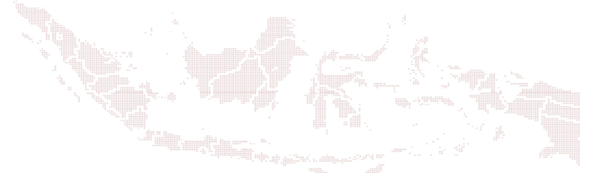

Copyright © 2022 OJK
Di Indonesia, seluruh pelaku usaha sektor jasa keuangan wajib terdaftar
dan memiliki izin dari Otoritas Jasa Keuangan. Anda dapat melakukan
pencarian pelaku usaha sektor jasa keuangan baik lembaga maupun individu
Legalitas & Logis
Cek perusahaannya apakah telah memiliki izin badan hokum, izin kegiatan,
serta izin produk.
Cek rasionalitas ddan imbal hasil atau keuntungan yang didapat dari
investasi tersebut
Indonesia Financial Services Registry
Cek Legalitas
Cek Logis

3500+
Jumlah LJK Legal
3500+
Jumlah Entitas Diberhentikan
Pengumuman
Masukan Nama Pelaku SJK
Pencarian Nama Pelaku SJK
Pencarian Nomor Identitas
Cara Penggunaan
Di Indonesia, seluruh pelaku usaha sektor jasa keuangan wajib terdaftar
dan memiliki izin dari Otoritas Jasa Keuangan. Anda dapat melakukan
pencarian pelaku usaha sektor jasa keuangan baik lembaga maupun individu
Pencarian
Cek Pelaku Usaha jasa keuangan selalu terdaftar menggunakan IFSR
Verifikasi
Pastikan izin cek legal usaha sesuai dengan jasa keuangan yang anda
butuhkan
Informasi
Selalu gunakan nomor atau kontak LJK yang terdaftar pada IFSR
1
2
3
atau
Otoritas Jasa Keuangan, Gedung Soemitro Djojohadikusumo
Jalan Lapangan Banteng Timur 2-4
Jakarta 1070
Indonesia
(021) 2960 0000
(021) 385 8321
humas@ojk.go.id
Mengatur - Mengawasi - Melindungi
Mudah & Cepat
Lengkap & Terbaru

 Aman & Terverifikasi
Aman & Terverifikasi
Last updated
: 17 Oktober 2023 18:12:34 WIB
Last Publish Date
: Oktober 2023
Cek FSR Sekarang
Laporkan Entitas Ilegal
Cari
Selengkapnya
Cari Lembaga Jasa Keuangan
Cari Produk
Masukan Nomor Identitas
OJK Cabut Izin Usaha di Bidang Asuransi Jiwa Atas PT Asuransi Jiwa
Adisarana Wanaartha
Otoritas Jasa Keuangan melalui Keputusan Dewan Komisioner Otoritas
Jasa Keuangan Nomor KEP-71/D.05/2022 tanggal 5 Desember 2022 telah
mencabut izin usaha di Bidang Asuransi Jiwa PT Asuransi Jiwa Adisarana
Wanaartha
20 September 2023
OJK Cabut Izin Usaha di Bidang Asuransi Jiwa Atas PT Asuransi Jiwa
Adisarana Wanaartha
Otoritas Jasa Keuangan melalui Keputusan Dewan Komisioner Otoritas
Jasa Keuangan Nomor KEP-71/D.05/2022 tanggal 5 Desember 2022 telah
mencabut izin usaha di Bidang Asuransi Jiwa PT Asuransi Jiwa Adisarana
Wanaartha
20 September 2023
Pembekuan Kegiatan Usaha Perusahaan Modal Ventura PT Sarana Jambi
Ventura
Otoritas Jasa Keuangan telah melakukan pembekuan kegiatan usaha
Perusahaan Modal Ventura karena belum melaksanakan rencana pemenuhan
untuk memenuhi tingkat kesehatan keuangan dengan kondisi minimum sehat
20 September 2023